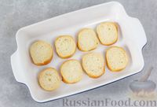

1. Подготовьте все необходимые продукты.
2. Включите духовку для разогрева до 200 градусов.
Багет нарежьте кружочками толщиной примерно 1 см.
Выложите кусочки хлеба в один слой на противень
или в форму для запекания.

3. Поместите хлеб в разогретую духовку и подсушите в течение 5-7 минут, до золотистого цвета. Хлеб должен слегка подрумяниться и приобрести хрустящую
корочку снаружи, но остаться мягким внутри.
4. Укроп промойте и обсушите. Отложите 1 веточку укропа для украшения бутербродов. Оставшуюся зелень укропа мелко нарежьте.
Соедините творожный сыр,
нарезанный укроп и щепотку молотого чёрного перца. Туда же выдавите из лимона 2-3 капли сока. Хорошо перемешайте. Солить смесь нет необходимости,
поскольку солоноватый вкус бутербродам придаст сёмга.
5.
Распределите получившуюся массу по поверхности ломтиков поджаренного хлеба. Толщину слоя сырной массы можно регулировать по вкусу. Я делала слой
примерно 0,5-0,7 мм - получается 8 бутербродов.
6.
Слабосоленую сёмгу нарежьте тонкими ломтиками и выложите на бутерброды с творожным сыром.
7.
Маринованный огурец нарежьте тонкими кружочками.
Украсьте кружочками огурца бутерброды.

8. Добавьте на каждый бутерброд небольшую веточку укропа в качестве украшения.
9. Выложите бутерброды с творожным сыром и сёмгой на сервировочную тарелку и подайте к столу.
10. Приятного аппетита!